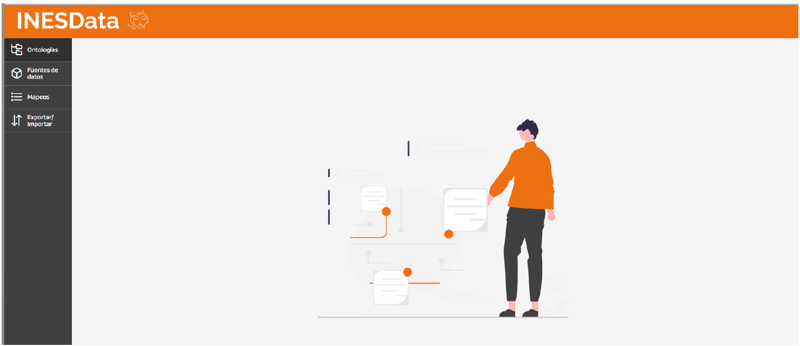
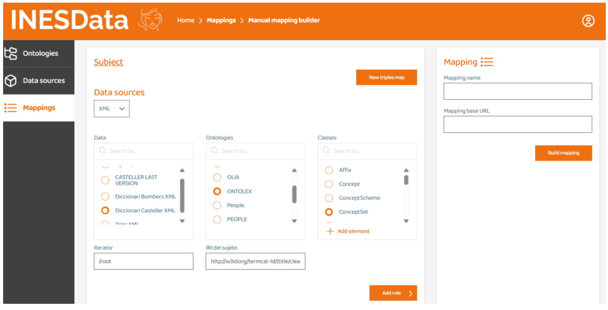

Mapping tool designed to facilitate the creation and management of knowledge graphs using declarative rules. It includes a web application to define, store, and manage mapping rules that enable efficient relationships between data. The solution includes an optimized engine capable of interpreting these rules and generating graphs from large volumes of data in various formats.

Home screen with the 4 available menus: Ontologies, Data, Mappings, Export/Import.

The application supports both manual mapping creation and automatic generation.